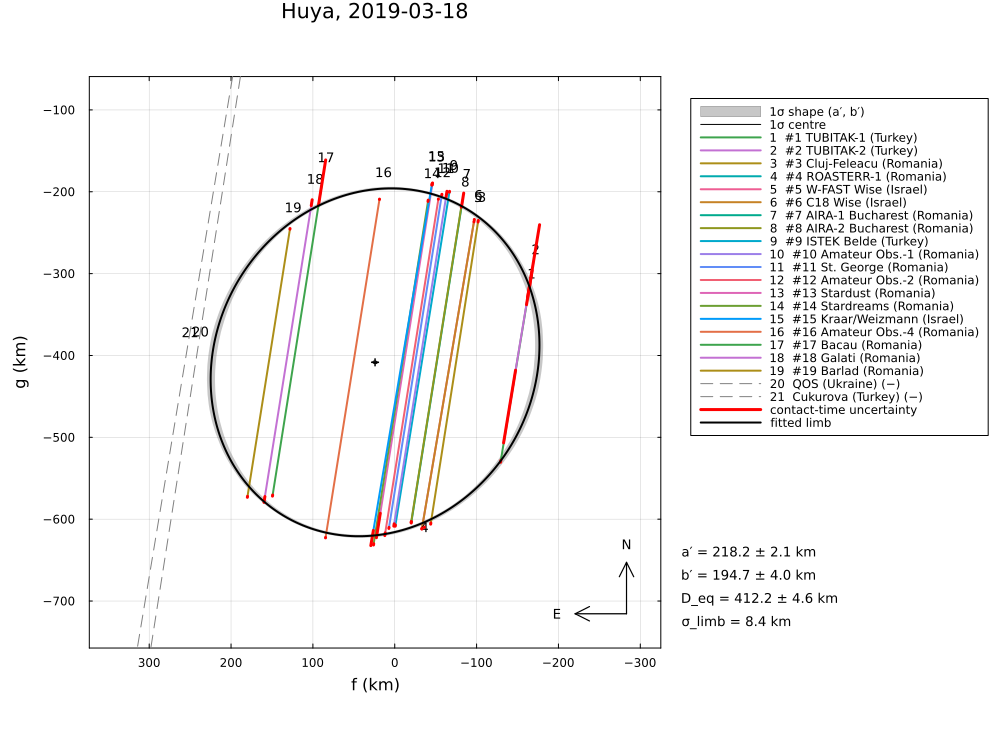
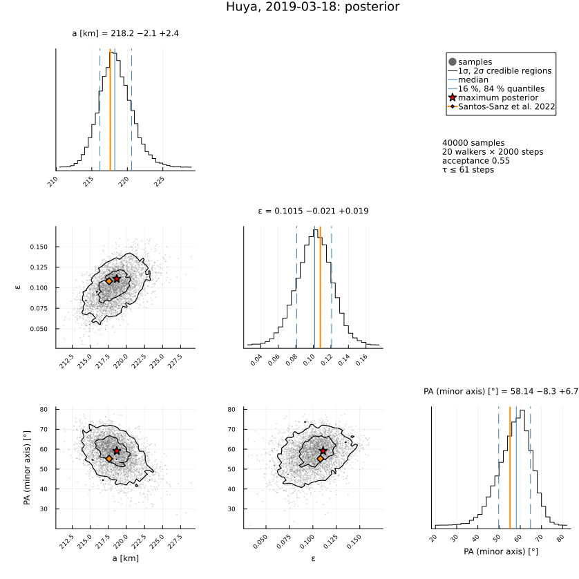
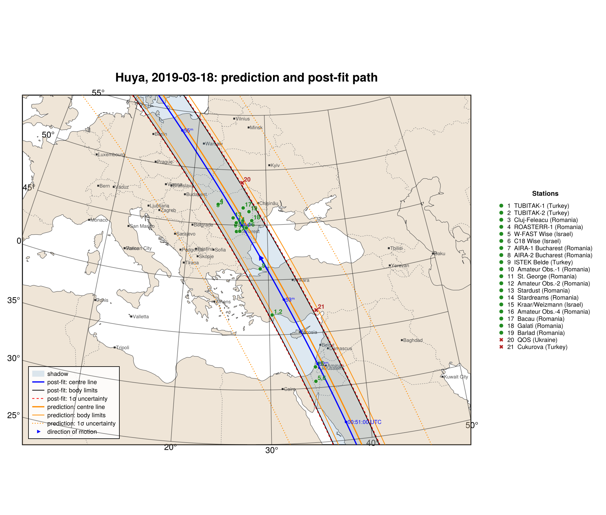
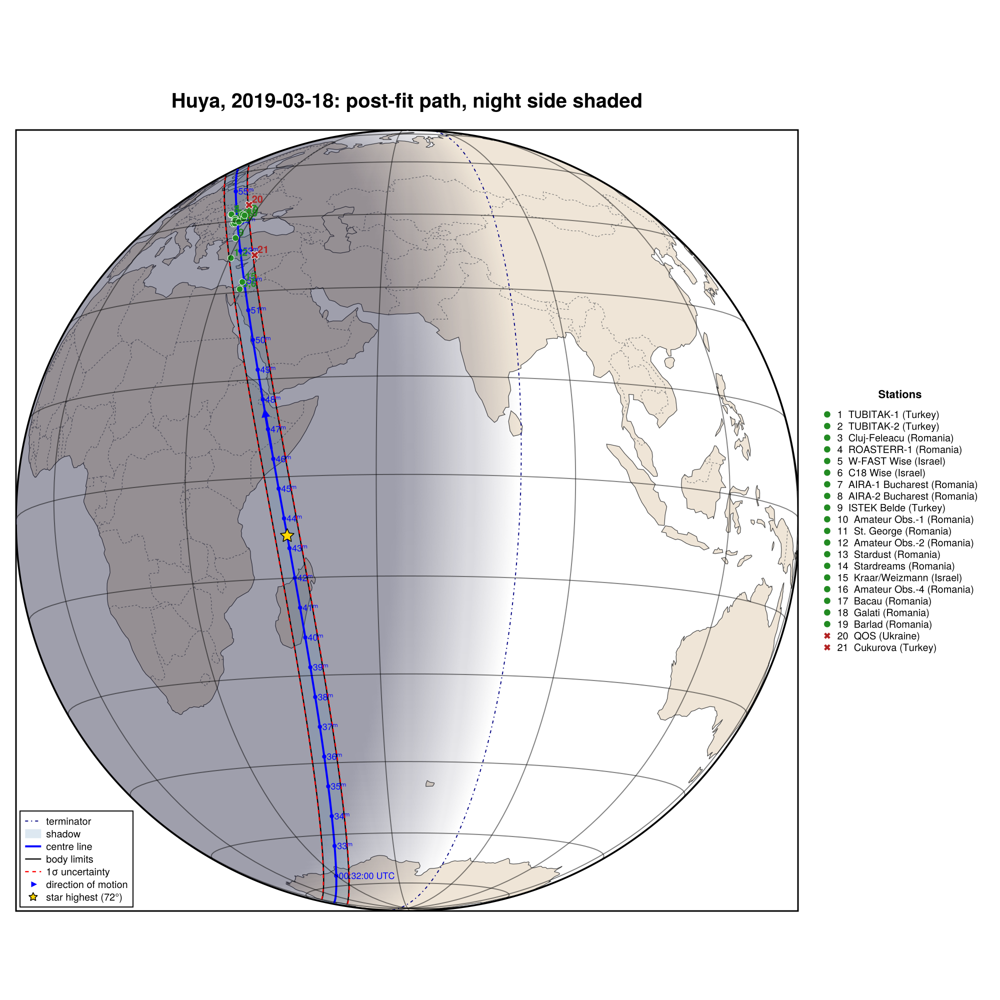

Huya, 2019 March 18
The occultation of Gaia DR2 4352760586390566400 by (38628) Huya on 2019 March 18, reduced from the published timings of Santos-Sanz et al. (2022), A&A 664, A130, "Physical properties of the trans-Neptunian object (38628) Huya from a multi-chord stellar occultation": 19 positive chords from 18 sites (Table A.3) and the closest negative chords (Table A.1), compared with the published ellipse (Table A.4).
The chords scatter far more than their timing errors (χ²/dof ≈ 230), and same-sign residuals at immersion and emersion point to clock errors. The example therefore shows the limb allowance σ_limb = :auto, a Bayesian fit with clock priors, and the posterior:
| a (km) | b (km) | P (°) | D_eq (km) | |
|---|---|---|---|---|
| Santos-Sanz et al. (2022) | 217.6 ± 3.5 | 194.1 ± 6.1 | 55.2 ± 9.1 | 411.0 ± 7.3 |
| radial residuals, σ_limb = 7.3 km | 218.1 ± 2.1 | 192.7 ± 5.9 | 62.9 ± 7.3 | 410.0 ± 6.2 |
| along the chords, σ_limb = 8.4 km | 218.2 ± 2.1 | 194.7 ± 4.0 | 59.8 ± 6.8 | 412.2 ± 4.6 |
| clock priors N(0, 1 s), σ_limb = 10.1 km | 217.8 ± 3.0 | 195.6 ± 5.3 | 61.0 ± 9.8 | 412.8 ± 5.7 |
The data are transcribed in examples/data/huya_20190318.jl, with the stored JPL Horizons ephemeris, so the script runs offline:
julia --project=. examples/huya_2019.jl [output_dir] (default: examples/output/huya_2019)The code is not run when the manual is built. The output after each section is that of the last run of examples/huya_2019.jl, stored in examples/output/huya_2019/output.txt.
using Occultations, Random, Printf, Statistics
using Plots
import CairoMakie # saves the GeoMakie maps (Makie figures)
include(joinpath(@__DIR__, "standard_figures.jl"))
include(joinpath(@__DIR__, "data", "huya_20190318.jl"))
out = length(ARGS) >= 1 ? ARGS[1] : mkpath(joinpath(@__DIR__, "output", "huya_2019"))
rng = MersenneTwister(2019)
P = HUYA_PAPER
row(tag, r) = @printf("%-38s a = %5.1f ± %3.1f b = %5.1f ± %3.1f P = %5.1f ± %4.1f D_eq = %5.1f ± %3.1f χ²/dof = %.2f\n",
tag, r[:equatorial_radius]..., r[:semi_minor_axis]..., r[:position_angle]...,
2r[:equivalent_radius][1], 2r[:equivalent_radius][2], reduced_chi2(r))Event and geometry
ev = huya_event()
display(ev)
D = ev.ca.dist_km
@printf("distance %.4f au (paper %.2f), shadow velocity %.2f km/s (%.2f), stellar diameter %.2f km (%.2f), Fresnel scale %.2f km at 0.6 µm (%.2f)\n",
D / 1.495978707e8, P.distance_au, ev.ca.vel, P.velocity, apparent_diameter(ev.star, D), P.star_diameter_km,
fresnel_scale(0.6, D), P.fresnel_km)
savefig(plot(ev; title="Huya, 2019-03-18: chords", size=(1000, 750)), joinpath(out, "huya_chords.png"))Event Huya, 2019-03-18: (38628) Huya occults Star(Gaia DR2 4352760586390566400, RA=16 41 06.4260, Dec=-06 43 34.576)
closest approach 2019-03-18T00:42:35.218: 0.0937" (1927.6 km), PA 262.89°, 8.156 km/s, distance 28.3503 au
Chord(#1 TUBITAK-1 (Turkey), positive)
Chord(#2 TUBITAK-2 (Turkey), positive)
Chord(#3 Cluj-Feleacu (Romania), positive)
Chord(#4 ROASTERR-1 (Romania), partial)
Chord(#5 W-FAST Wise (Israel), positive)
Chord(#6 C18 Wise (Israel), positive)
Chord(#7 AIRA-1 Bucharest (Romania), positive)
Chord(#8 AIRA-2 Bucharest (Romania), positive)
Chord(#9 ISTEK Belde (Turkey), positive)
Chord(#10 Amateur Obs.-1 (Romania), positive)
Chord(#11 St. George (Romania), positive)
Chord(#12 Amateur Obs.-2 (Romania), positive)
Chord(#13 Stardust (Romania), positive)
Chord(#14 Stardreams (Romania), positive)
Chord(#15 Kraar/Weizmann (Israel), positive)
Chord(#16 Amateur Obs.-4 (Romania), positive)
Chord(#17 Bacau (Romania), positive)
Chord(#18 Galati (Romania), positive)
Chord(#19 Barlad (Romania), positive)
Chord(QOS (Ukraine), negative)
Chord(Cukurova (Turkey), negative)
distance 28.3503 au (paper 28.35), shadow velocity 8.16 km/s (8.07), stellar diameter 0.70 km (0.70), Fresnel scale 1.13 km at 0.6 µm (1.13)Limb fits
@printf("%-38s a = %5.1f ± %3.1f b = %5.1f ± %3.1f P = %5.1f ± %4.1f D_eq = %5.1f ± %3.1f\n",
"published (Table A.4)", P.a..., P.b..., P.position_angle..., P.D_eq...)1. Timing errors only. The scatter of the chords is much larger than their timing errors:
r0 = fit_limb(ev; rng=rng)
row("timing errors only", r0)2. With a limb allowance. As in the paper (radial residuals) and with residuals along the chords, each with the limb allowance σlimb for which χ²/dof = 1 (as SORA's `ellipseerror`):
rr = fit_limb(ev; residual=:radial, σ_limb=:auto, rng=rng)
row(@sprintf("radial, σ_limb = %.1f km", rr.problem.σ_limb), rr)
rc = fit_limb(ev; σ_limb=:auto, rng=rng)
row(@sprintf("along chords, σ_limb = %.1f km", rc.problem.σ_limb), rc)3. The residuals. Same-sign errors at immersion and emersion of a chord indicate clock errors:
println("\nlargest contact residuals of the timing-error-only fit:")
pts = Dict((p.chord, p.kind) => p for p in contact_points(ev))
res = sort(contact_residuals(r0); by=x -> -abs(x.dt / pts[(x.chord, x.kind)].σ_t))
for x in res[1:8]
@printf(" %-30s %-9s O−C = %+6.2f s = %+6.1f km (%+5.1f σ)\n", x.chord, x.kind, x.dt, x.dr,
x.dt / pts[(x.chord, x.kind)].σ_t)
end4. Bayesian treatment of the clocks. An offset for every station except W-FAST (the reference), with a prior N(0, 1 s), plus the limb allowance:
ref = "#5 W-FAST Wise (Israel)"
dts = [c.name for c in ev.chords if ispositive(c) && c.name != ref]
priors = Dict(Symbol("dt_", n) => (0.0, 1.0) for n in dts)
rb = fit_limb(ev; fit_dt=dts, priors=priors, σ_limb=:auto, rng=rng)
row(@sprintf("clock priors N(0,1 s), σ_limb = %.1f km", rb.problem.σ_limb), rb)
println("fitted clock offsets [s]: ",
join([@sprintf("%s %+.2f", split(k)[1], v[1]) for (k, v) in
sort(collect(clock_offsets(rb)); by=x -> parse(Int, split(x[1])[1][2:end]))], ", "))published (Table A.4) a = 217.6 ± 3.5 b = 194.1 ± 6.1 P = 55.2 ± 9.1 D_eq = 411.0 ± 7.3
timing errors only a = 217.2 ± 0.1 b = 192.4 ± 0.3 P = 60.1 ± 0.4 D_eq = 408.8 ± 0.3 χ²/dof = 227.76
radial, σ_limb = 7.3 km a = 218.1 ± 2.1 b = 192.7 ± 5.9 P = 62.9 ± 7.3 D_eq = 410.0 ± 6.2 χ²/dof = 1.00
along chords, σ_limb = 8.4 km a = 218.2 ± 2.1 b = 194.7 ± 4.0 P = 59.8 ± 6.8 D_eq = 412.2 ± 4.6 χ²/dof = 1.00
largest contact residuals of the timing-error-only fit:
#8 AIRA-2 Bucharest (Romania) emersion O−C = -1.41 s = -11.5 km (-34.3 σ)
#9 ISTEK Belde (Turkey) immersion O−C = -1.97 s = -16.1 km (-31.8 σ)
#16 Amateur Obs.-4 (Romania) immersion O−C = +0.72 s = +5.9 km (+26.8 σ)
#17 Bacau (Romania) emersion O−C = -2.19 s = -17.9 km (-26.4 σ)
#15 Kraar/Weizmann (Israel) immersion O−C = -2.18 s = -17.9 km (-21.8 σ)
#5 W-FAST Wise (Israel) immersion O−C = +0.33 s = +2.7 km (+20.8 σ)
#9 ISTEK Belde (Turkey) emersion O−C = -1.54 s = -12.6 km (-18.6 σ)
#11 St. George (Romania) emersion O−C = -1.39 s = -11.4 km (-18.1 σ)
clock priors N(0,1 s), σ_limb = 10.1 km a = 217.8 ± 3.0 b = 195.6 ± 5.3 P = 61.0 ± 9.8 D_eq = 412.8 ± 5.7 χ²/dof = 1.00
fitted clock offsets [s]: #1 -0.03, #2 +0.37, #3 -0.33, #4 -0.32, #6 -0.43, #7 +0.46, #8 +0.23, #9 +0.63, #10 +0.51, #11 +0.34, #12 -0.13, #13 +0.67, #14 -0.71, #15 +0.39, #16 -0.70, #17 +0.79, #18 +0.30, #19 -0.81Posterior (fit along the chords with σ_limb)
post = sample(rc; nsteps=3000, rng=rng)
display(post)
ds = derived_summary(post)
@printf("D_eq = %.1f -%.1f +%.1f km, b = %.1f -%.1f +%.1f km (paper: D_eq = %.1f ± %.1f km)\n",
2ds.equivalent_radius.median, 2ds.equivalent_radius.minus, 2ds.equivalent_radius.plus,
ds.semi_minor_axis.median, ds.semi_minor_axis.minus, ds.semi_minor_axis.plus, P.D_eq...)
println("χ² profile 1σ interval of the position angle: ", round.(confidence_interval(rc, :position_angle); digits=1))
savefig(cornerplot(post; vars=[:equatorial_radius, :oblateness, :position_angle],
axislabels=Dict(:equatorial_radius => "a [km]", :oblateness => "ε", :position_angle => "PA (minor axis) [°]"),
truths=Dict(:equatorial_radius => P.a[1], :oblateness => 1 - P.b[1] / P.a[1],
:position_angle => P.position_angle[1]), truth_label="Santos-Sanz et al. 2022"),
joinpath(out, "huya_corner.png"))Posterior of LimbProblem: 20 walkers × 3000 steps (burn-in 1000), acceptance 0.55
center_f = 24.212660 -2.907891 +3.076844
center_g = -408.111690 -1.620417 +1.673262
equatorial_radius = 218.238740 -2.100710 +2.361637
oblateness = 0.101546 -0.020502 +0.019260
position_angle = 58.136775 -8.349527 +6.653581
D_eq = 414.0 -4.6 +4.6 km, b = 196.4 -3.9 +3.6 km (paper: D_eq = 411.0 ± 7.3 km)
χ² profile 1σ interval of the position angle: (52.1, 66.0)Negative chords, astrometry, shape
for x in check_negative_chords(rc)
@printf(" %-20s %s, closest distance to the limb %.1f km\n", x.chord, x.conflict ? "CROSSES THE LIMB" : "consistent", x.distance)
end
a = astrometry(rc)
@printf("\nastrometric position at %s UTC:\n RA = %s Dec = %s (σ = %.2f, %.2f mas incl. the star)\n",
isot(a.epoch; digits=1), a.ra_str, a.dec_str, a.ra_err, a.dec_err)
@printf(" offset from the JPL Horizons ephemeris: Δα cos δ = %+.2f ± %.2f mas, Δδ = %+.2f ± %.2f mas\n",
a.offset_ra, a.offset_ra_err, a.offset_dec, a.offset_dec_err)
println(" (the paper's centre (f, g) = (2984.7, −1850.9) km refers to the older JPL#28 orbit)")The small rotational amplitude (0.031 mag) and the apparent axis ratio: a Maclaurin spheroid (a = b > c) seen at the aspect θ has the apparent ellipse a × √(a² cos²θ + c² sin²θ).
ratio = rc[:semi_minor_axis][1] / rc[:equatorial_radius][1]
@printf("\napparent axis ratio b/a = %.3f: a Maclaurin spheroid needs c/a ≤ %.3f (equal only if equator-on);\n",
ratio, ratio)
for θ in (90.0, 70.0, 60.0)
c = sqrt(max(ratio^2 - cosd(θ)^2, 0)) / sind(θ)
a_, b_ = projected_axes_dunham(1.0, 1.0, c, 0.0, θ)
@printf(" aspect %3.0f°: c/a = %.3f (check: projected ratio %.3f)\n", θ, c, b_ / a_)
end QOS (Ukraine) consistent, closest distance to the limb 18.7 km
Cukurova (Turkey) consistent, closest distance to the limb 31.4 km
astrometric position at 2019-03-18T00:42:35.2 UTC:
RA = 16 41 06.41994 Dec = -06 43 34.6071 (σ = 0.21, 0.14 mas incl. the star)
offset from the JPL Horizons ephemeris: Δα cos δ = +1.17 ± 0.14 mas, Δδ = -19.86 ± 0.08 mas
(the paper's centre (f, g) = (2984.7, −1850.9) km refers to the older JPL#28 orbit)
apparent axis ratio b/a = 0.892: a Maclaurin spheroid needs c/a ≤ 0.892 (equal only if equator-on);
aspect 90°: c/a = 0.892 (check: projected ratio 0.892)
aspect 70°: c/a = 0.877 (check: projected ratio 0.892)
aspect 60°: c/a = 0.853 (check: projected ratio 0.892)Maps
# the standard figures: limb fits (default, 68.3 % region, as the paper), posterior, maps (prediction,
# post-fit, comparison) and the globe
standard_figures("huya", rc; out=out, posterior=post,
projection="+proj=laea +lon_0=28 +lat_0=40", limits=(5, 50, 25, 55), window=900, marks=60)
println("figures written to ", out)The limb fit along the chords with σ_limb, and its posterior:


The prediction and the post-fit shadow path, and the post-fit path on the globe:


The results are discussed in Comparison with published reductions.